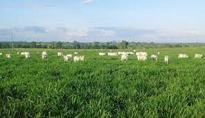
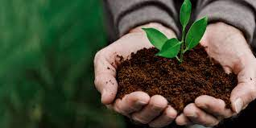

Manejo de Pasto
Consiste e manejar os pastos de forma certa para não prejudicar o solo que pode conter erosões.

Adubação
Essa técnica consiste na inclusão de plantas especialmente cultivadas para essa finalidade, restos de ervas daninhas ao solo ou vegetação forrageira. Essa é uma das maneiras mais acessíveis e baratas de se repor a matéria orgânica no solo, aperfeiçoando suas características físicas e promovendo os processos.
